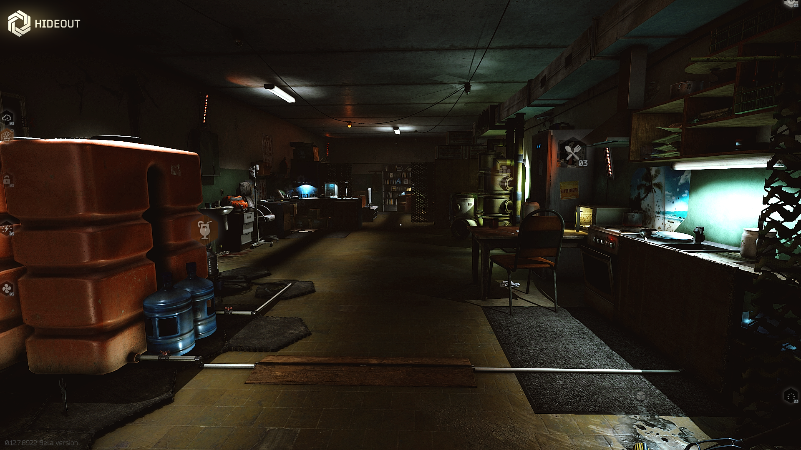

Refugio
Descripcion
El refugio se encuentra inicialmente como un refugio antibombas abandonado
y desordenado sin ningún medio para mantener la vida. El jugador puede
construir y mejorar varios módulos Hideout, como el generador de energía,
el sistema de recolección de agua, la ventilación, la instalación de
tratamiento médico, el centro de inteligencia, la calefacción, el baño y
otros módulos avanzados.

Características
Para mejorar el escondite a condiciones operativas, lo primero que el jugador deberá instalar es el generador de energía, que consume combustible. Sin combustible, la producción y regeneración de características se ralentizará o interrumpirá. También se debe tener en cuenta que el tamaño del alijo dependerá directamente del nivel del alijo de Hideout. Los jugadores con una edición limitada del juego recibirán un tamaño de alijo mejorado, hasta el nivel 4. Además de los módulos básicos de Hideout, el jugador podrá instalar módulos avanzados que mejoran drásticamente el nivel de vida y la seguridad, aceleran la nivelación de habilidades y permitir la producción de artículos y recursos únicos. Lo más notable es un campo de tiro completo, donde el jugador puede probar armas. El escondite es una parte integral del juego.